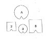
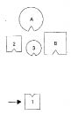
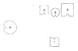
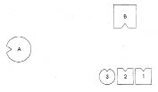
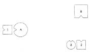
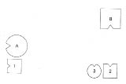
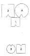

HELLINGER Frieda’ya Senin neyin var?
FRIEDA Erkek kardeşim altı ay önce intihar etti. Bu, varoluşumu derinden sarstı. Ana babamın benden beklediği…
HELLINGER Sen hiç intihara teşebbüs ettin mi?
FRIEDA Hayır ama aklımdan geçti.
HELLINGER O halde çalışmaya şimdi seni alıyorum. –Ailen kimlerden oluşuyor?
FRIEDA Yalnızca ben kaldım, bir de ana babam.
HELLINGER Kardeşin nasıl intihar etti?
FRIEDA Kendini bir otoyol köprüsünden aşağı attı.
HELLINGER Kaç yaşındaydı?
FRIEDA Yirmi yedi.
HELLINGER Bu dört kişiyi diziyoruz; yani babanı, anneni, ölen erkek kardeşin ve seni.
FRIEDA Annemin bir çocuğu daha olmuş. Doğumundan altı gün sonra ölmüş. O büyük ağabeyimdi.
HELLINGER Buradaki dinamiği görüyoruz: “Seni izliyorum”. Bu kardeşe de ihtiyacımız var elbette. Bütünüyle akıldan çıkmış. Ancak onu daha sonra dizime ekleyeceğiz.
1. Resim

B Baba
A Anne
2 İkinci çocuk, erkek, yirmi yedi yaşında yaşamına son vermiş
3 Üçüncü çocuk, kız (=Frieda)
HELLINGER gruba Bütün aile tek bir noktaya yönelik. Görüyor musunuz? Olasılıkla hepsi erken ölmüş çocuğa bakmakta.
Frieda’ya Bu çocuğun ölümü nedeniyle herhangi birisine bir suçlama yöneltiliyor mu?
FRIEDA Evet. Çocuk yedi aylık doğmuş. Annem, dırdırı yüzünden düştüğü ruh haliyle erken doğum yapmış olmasından ötürü babamı suçlar. Bebek meme emememiş ve aslında açlıktan ölmüş.
HELLINGER Şimdi bu çocuğu da dizime ekle.
2. Resim

1 İlk çocuk, erkek, doğumdan kısa bir süre sonra ölmüş
HELLINGER Baba nasıl?
BABA Daha önce, gözlerim yalnızca karşıya çevrili bir halde kendimi yapayalnız hissediyordum. Şimdiyse bu çocuğa doğru bir çekim hissediyor ve karıma öfke duyuyorum.
HELLINGER Anne nasıl?
ANNE Daha önce çok kötüydüm. Berbat hissediyordum kendimi. Artık hiç değilse bakışlarımı yöneltebileceğim bir şey var. Ama kendimi iyi hissetmem demek değil bu.
İKİNCİ ÇOCUK Annenin arkamda olması hiç hoş değil benim için. Daha önce bir de elini omzuma koyması daha da kötüydü.
ÜÇÜNCÜ ÇOCUK Babamdan daha da uzaklaşmak istiyorum. Kendimi yanımdaki kardeşime yakın hissettim. Diğer çocuk da geldiğinden beri durum değişti: Şimdi babamla daha mesafeliyim.
HELLINGER Çocuğun ölümünden suçluluk duyan kim? –Anne.
Onun için ölen kim? –Oğul.
Erken ölen çocuğa Sen nasılsın?
İLK ÇOCUK Demin birden kendimi gerçekten çok kötü hissettim. Yük önce aileden geliyordu, sonra anneden geldiği belirginleşti.
Hellinger anneyi ailenin dışına çıkarır.
3. Resim

HELLINGER anneye Orada nasılsın?
ANNE Daha iyi. Sağ yanımdaki ağırlık kalktı.
HELLINGER Çözüm şu olabilirdi;
4. Resim

HELLINGER Baba için böylesi nasıl?
BABA Sırtımdan yük kalktığını hissediyorum.
İLK ÇOCUK Anneme doğru çekiliyorum.
İKİNCİ ÇOCUK Ben kendimi güvende hissediyorum.
ÜÇÜNCÜ ÇOCUK Şimdi oldu.
Hellinger erken ölen çocuğu, sırtı annesine dönük olacak şekilde yerleştirir.
5. Resim

HELLINGER Dinamik bu: Anne, “Seni izliyorum” diyor.
Anneye Burada nasılsın?
ANNE Kendimi son derece sevgi dolu hissetmeye başladım. Çok daha iyiyim.
İLK ÇOCUK Nispeten iyiyim burada. Tam olarak değil henüz ama…
Hellinger anneyi erken ölen çocuğun sağına yerleştirir.
6. Resim

HELLINGER Böyle nasıl?
İLK ÇOCUK Daha da iyi olabilir.
HELLINGER İlk çocuk için doğru yer babası ve kardeşlerinin yanı olurdu. O uzaklaştığında kardeşlerde ne oldu?
İKİNCİ ÇOCUK Sağ yanımda boşluk hissettim.
ÜÇÜNCÜ ÇOCUK Ben allak bullak hissediyorum kendimi.
HELLINGER Ölen çocuk kardeşlerinin yanında olmazsa kardeşler onu izler. Şimdi başka bir çözüm göstereceğim.
Hellinger anneyi kocanın soluna yerleştirir, erken ölen çocuğu da sırtını onlara dayayacağı biçimde ana babanın önüne oturtur.
7. Resim

HELLINGER ebeveyne Ellerinizi usulca çocuğun başına koyun.
Anne ağlamaya başlar.
HELLINGER anneye Çocuğa bak. –Kocana yaslan ve çocuğa “Yavrucuğum” de.
ANNE Yavrucuğum.
HELLINGER Tekrarla!
ANNE Yavrucuğum.
HELLINGER Derin nefes al! –Ağzını açık tut.
HELLINGER Şimdi nasıl?
ANNE Daha iyiyim. Artık diğerlerini de görebiliyorum.
HELLINGER erken ölen çocuğa Nasılsın?
İLK ÇOCUK İyi.
HELLINGER kendini öldüren ikinci çocuğa Sen nasılsın?
İKİNCİ ÇOCUK İlk kez annemi görüyorum.
HELLINGER gruba Böyle bir şey olduğunda, bir çocuk öldüğünde bir suçlu aramak ya da kendini suçlu hissetmek ana baba için daha kolaydır. Böylelikle acıyla, alınyazısıyla yüzleşmek zorunda kalmazlar. Böyle bir alınyazısında çözüm, ebeveynin birbirine yaklaşması, birlikte olması, “Bunu birlikte taşıyoruz” diyerek çocuğu bakışları ve yüreklerinde yaşatması olacaktır. Burada çocuğu gözleri ve gönüllerinden ırak tutmuşlar.
Frieda’ya Yerine geç şimdi!
Frieda dizimdeki yerini aldığında Böyle iyi mi?
FRIEDA Evet.
HELLINGER Tamam, bu kadar.